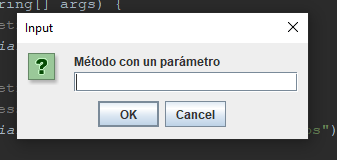
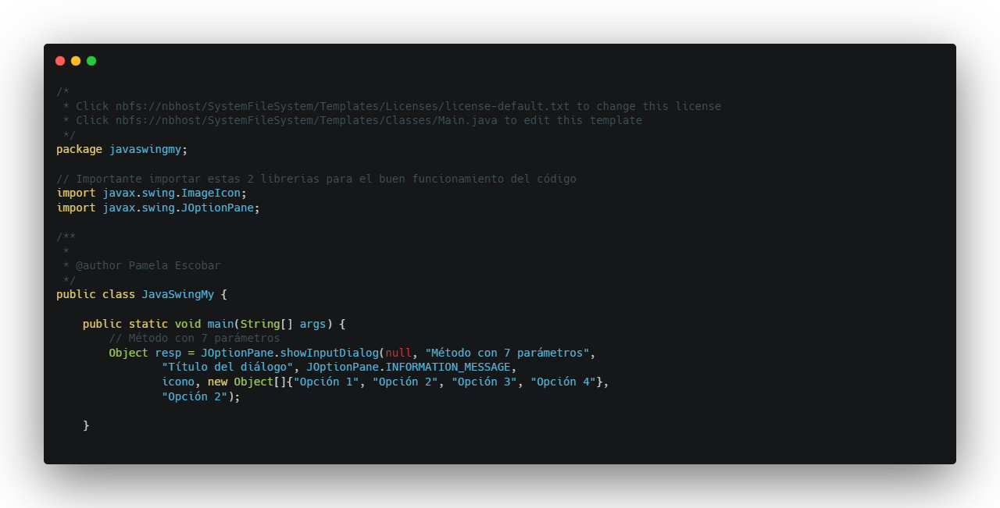

En esta entrada vamos a ver el método showInputDialog. Este método muestra una ventana de diálogo para que el
usuario
introduzca datos en un cuadro de texto o seleccione en un combo.
El método está sobrecargado con uno, dos, tres, cuatro y siete parámetros. Este último lo utilizaremos si
queremos tener
un icono personalizado y combo con distintas opciones que le pasamos con un array de objetos, y la opción
seleccionada
por defecto.
OptionPane.showConfirmDialog(Component parentComponent,
Object message,
String title,
int messageType,
Icon icon,
Object[] selectionValues,
Object initialSelectionValue)
Vamos a ver distintos ejemplos del método:
Como único parámetro el mensaje a mostrar

Con 2 parámetros tenemos dos posibilidades; el componente padre y el mensaje a mostrar, o bien el mensaje y
un valor por
defecto.
Con 3 parámetros que serían el componente padre, el mensaje y un valor inicial.
Con 4 parámetros; el componente padre, el mensaje, título del cuadro de diálogo y el tipo de mensaje para
que
nos
muestre el icono correspondiente (Ver
showMessageDialog).

Y la última sobrecarga con el método antes mencionado de 7 parámetros.

A excepción de este último método que recibe un Object, todos los demás reciben un valor
String. Tanto en
uno como en
los otros, si vamos a recibir datos numéricos, deberemos realizar la conversión para poder operar con ellos.
En el último de los ejemplos, recogemos el Object y mostramos por pantalla la opción recogida con el método
showMessageDialog (método al que le podemos pasar un object como parámetro).
Código Completo